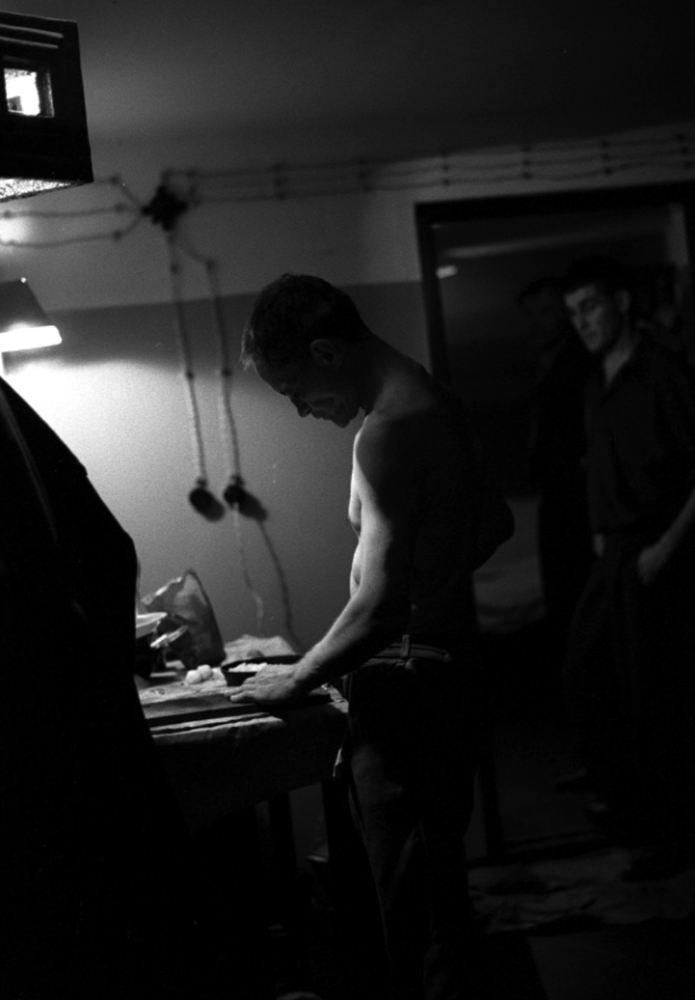
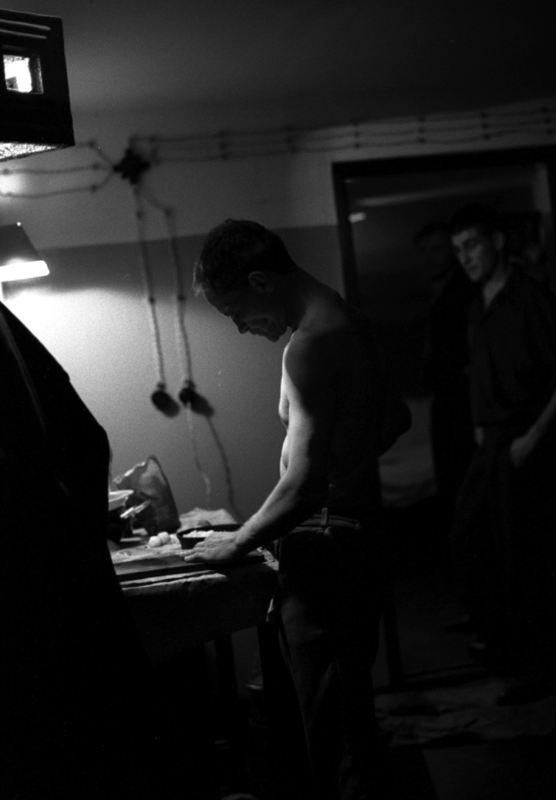

DAU — PRTCL. INS192–000167
DAU — PRTCL. INS192–
A protocol
for The Institute related docs.
A-B-LEFTSITE
DAU — TXT. HDK-0015
# Institute
Rooted in the top-secret, autonomous research facilities
built for Soviet scientists by Moscow, the DAU Institute became
an artistic and psychological playground
on a massive scale.
As in the closely-guarded sites that inspired it,
the researchers of the Institute explored fields ranging
from quantum physics, loop quantum gravity and string theory.
They also ventured outside scientific orthodoxy
to fields such as orgone energy, thought transference
and teleportation, movement through time and space,
psycho-artistic experimentation on the borders of human behaviour,
traditional and non-traditional practices and rituals —
Christian, Buddhist, Jewish and Shamanic —
applying scientific investigative principles
in each case.

 

DAU — PRTCL. INS192–0000636
— A
Construction, 1938
Institute
1
2
3
4
5
6
7
DAU — PRTCL. INS192 –0001229
Construction, 1938
DAU — PRTCL. INS192 –0001371
Construction, 1938
DAU — PRTCL. INS192 –0001400
Construction, 1938
DAU — PRTCL. INS192 –0001680
Left hand side road
to the Spatial Fluctuations
Research Lab
DAU — PRTCL. INS192 –0001982 # Institute
/ Detail

DAU — PRTCL. INS192 –0001887
Left hand side road
to the Spatial Fluctuations
Research Lab
DAU — PRTCL.
DAU — TXT.
INS192–0002120
HDK-0029, TERM:003
Starting in 2009, several hundred people
abandoned their normal lives for three years
travelling back in time to the
Soviet Union...
DAU — TXT.
to live and work
HDK-0030, TERM:0035
at the Institute
and subject themselves
to its demands.
They came from many backgrounds —
street-cleaners, global artists,
philosophers, bar-workers,
Nobel Prize winners,
state agents, scientific,
spiritual and political figures
cut themselves off
from their societies
and lived and worked together.
They created a new and self-contained
world that worked to its own
strict rules, and it became their
daily reality.
DAU — PRTCL.
INS192–0002192
DAU — PRTCL. INS192–0002200
DAU — PRTCL. INS192–0002301

DAU — PRTCL. INS192 –0002842
DAU — PRTCL. INS192 –0002846
~1938-39
DAU — PRTCL. INS192 –0002848
~1938-39
DAU — PRTCL. INS192 –0004801
~1956
DAU — PRTCL. INS192 –0003500
~1942
DAU — PRTCL. INS192 –0004847
~1956
DAU — PRTCL. INS192 –0003521
~1941
DAU — PRTCL. INS192 –0004851
~1956

DAU — PRTCL. INS192 –0003580
~1942
DAU — PRTCL. INS192 –0004847
A—
NO.
2004H
Alexander Vilenkin
Member of the International Scientific
Conference at the Institute
Insitute years: 1956
DAU — PRTCL. INS192 –0004849

DAU — PRTCL. INS192 –0004849
NO. 0001B
DAU — PRTCL. INS192
Institute years:
18 94
19 38
48
52
Awards and Honours:
NO. 0010A
Anatoly Krupitsa
Director of the Institute
1938-1952
Born in Kronstadt, Russia.
Founded the Institute as place
for scientific research and development.
Made the Director of the Institute
by Soviet authorities.
Granted permission by the authorities
to begin work on a nuclear project.
Forced to step down as Director of the Institute.
Full Member of AS of the USSR
DAU — PRTCL. INS192 –0000203
DAU — PRTCL. INS192 –0000203
0000208
DAU — PRTCL.
DAU — TXT.
INS192
HDK-0627, TERM:000B
Laboratory Journal
Biochemistry Experiments
Started:
15.10.1952
Ended:
DAU — PRTCL. INS192
DAU — TXT. HDK-0627, TERM:001C
Электростимуляция мозга
Лозунги работы:
Общество, в котором каждый,
кто отклоняется от нормы, будет подвергнут
хирургическому оболваниванию.
«Технологический тоталитаризм»
Мозговой контроль = Физический контроль.
Бионический эксперимент.
Насилие с мозгом или спокойствие без мозга.
Физический контроль над разумом:
путь к психоцивилизованному обществу.
Идеальный человек — менее жестокий
и более счастливый.
Ваше электричество, доктор,
сильнее моих желаний.
DAU —
PRTCL. INS192 –0000400
RC—
Electro stimulation
and stereotactics operation
of a rat brain
DAU — TXT.
Stereotactics:
HDK-0627, TERM:002X
1. rack; 2. X-axis carriage moving device;
3. Y-axis mocrometric screw of the stereotactics head moving device;
4. stereotactics head;
5. X-axis mocrometric screw
of the stereotactics head moving device;
6. electrodes grip;
7. angular carriage moving device;
8. the bed; 9. stereotactics head grip; 10. head grip rack
DAU — PRTCL. INS192 –0000203
DAU — PRTCL. INS192 –0004847
LAB 2
DAU — PRTCL. INS192 –0003521
LAB 2
DAU — PRTCL. INS192 –0004851
LAB 1
DAU — PRTCL. INS192 –0003580
LAB 2
DAU — PRTCL. INS192
DAU — TXT. HDK-0627, TERM:001C
| The Institute Administration
| Anatoly Krupitsa | Director of the Institute |
| Nina Kovaleva | Director's PA |
| Zoya Popovava | Director's Science PA |
| Alexander Serduk | Director's Administrative Deputy |
| Vladimir Ermolenko | Director's Safety and Regime Deputy |
| Marina Antsibor | Director's Safety and Regime Deputy PA |
| Anatoly Sidko | HR Director |
| Alexey Trifonov | Director of the Institute Operations |
| Pavel Gordienko | Director of the Institute Special Dept. |
| Julia Sitnikova | Director of the Institute |
| | Internal Security Services |
| Viktor Mamonov | The Insitute Party Representative |
| Viktoria Morozova | The Insitute Party Representative PA |
| The Institute Scientific Crew
| DAU | Director of the Theoretical Dept. |
| Alexey Blinonv | Director of the Experimental Dept. |
| Andrey Losev | Director of the Quantum Theory Lab |
| Nikita Nekrasov | Team Lead |
| Feodor Safronov | Director of the Acoustic Lab |
| Jury Kot | Director of the Biochemistry Lab |
| Alexander Zakutsky | Director of the Device/Construction |
| | of the Experimental Dept. |
| Roman Shurinov | Director of the Energy Research Lab |
| Daria Berhitskaya | Biochemistry Lab Team Lead |
| The Institute Labs Crew
| Irina Bespalova | Biochemistry Lab Assistant |
| Alena Butirkina | Energy Research Lab Assistant |
DAU — PRTCL.
DAU — TXT.
INS192
HDK-0627, TERM:000B
Laboratory Journal
Energy Research Experiments
Started:
15.10.1952
Ended:
DAU — PRTCL. INS192
DAU — TXT. HDK-0627, TERM:001C
Orgone Accumulator
Harnessing the power of orgone energy
for the development of super-human abilities
in military personnel.
Establishing the existence of the elusive
energy substance orgone, as postulated
by Wilhelm Reich, by building a device according
to his original plans.
The structure is built using alternating layers
of organic and non-organic material, in order
to contain and amplify orgone energy
for further study.
It is thus possible to investigate
its potential for increasing the capacities
and endurance of workers in the fields of war,
intelligence and industry.
AFR
902DY1
Formative Results
of the ISC at the Institute
DAU — PRTCL. FDI9
DRFT. 002H–98–47–KTL7
Orgone Energy
EXP — DX178 Detail
PRTTP . TSTS
21.05.1956 | POS | NEG BLD